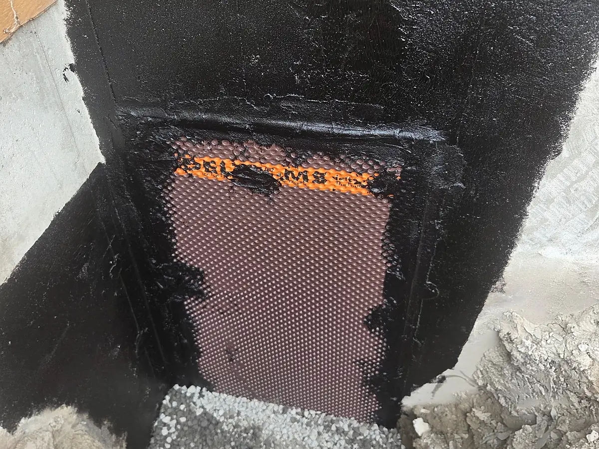

Drain français, installation et remplacement
Eau au sous-sol, drain bouché ou ocre ferreuse? Nous remplaçons et installons les drains français autour des fondations, avec réparation des fissures et imperméabilisation dans la même opération. Licence RBQ, soumission gratuite.

Le drain français
protège votre sous-sol.
Le drain français est un tuyau perforé posé au pied de la fondation, entouré de pierre nette et d'une membrane géotextile. Il recueille l'eau qui s'accumule dans le sol autour de la maison et l'évacue vers le puisard ou l'égout pluvial, avant qu'elle ne pousse contre les murs du sous-sol.
Avec les années, il peut s'écraser, se remplir de sédiments ou être colmaté par l'ocre ferreuse, un problème courant dans plusieurs secteurs de Montréal, de Laval et de la Rive-Nord. L'eau n'a alors plus d'issue : elle s'infiltre par les fissures, par le joint entre le mur et la dalle, ou remonte au bas des murs.
Le remplacement du drain français règle le problème à la source. Et comme le mur de fondation est dégagé, c'est le meilleur moment pour réparer les fissures par l'extérieur et poser une membrane d'imperméabilisation.
Vous vous demandez si votre maison a vraiment besoin d'un drain français? Lisez notre guide : drain français, pourquoi il est essentiel.
Un drain français
qui ne fait plus son travail.
Eau au bas des murs
De l'eau ou une ligne d'humidité au joint entre le mur de fondation et la dalle du sous-sol.
Dépôts orangés
Une boue orangée dans le puisard ou les sorties de drain : un signe typique d'ocre ferreuse.
Puisard sec
Le puisard reste sec après une forte pluie, alors que le sous-sol, lui, prend l'humidité.
Efflorescence
Des dépôts blancs sur le béton : l'eau traverse les murs au lieu d'être évacuée par le drain.
Odeur et moisissure
Une odeur de moisi, des taches sur les murs finis ou un tapis humide au périmètre du sous-sol.
Maison plus ancienne
Un drain d'origine en terre cuite, ou dont l'âge est inconnu, mérite une inspection.
Le remplacement, étape par étape
-
01
Diagnostic
On vérifie le sous-sol, le puisard et les sorties de drain pour confirmer d'où vient l'eau avant de proposer des travaux.
-
02
Excavation
On excave le long de la fondation jusqu'à la semelle, en protégeant votre terrain et vos aménagements.
-
03
Fondation et drain
On nettoie le mur, on répare les fissures, on pose la membrane, puis le nouveau drain dans la pierre nette et le géotextile.
-
04
Remblai
On remblaie, on compacte et on nivelle pour éloigner l'eau du bâtiment. Le chantier est laissé propre.
Eau au sous-sol? Parlons-en aujourd'hui.
Quand planifier
les travaux.
Printemps à automne
Le remplacement du drain français demande une excavation : il se planifie quand le sol n'est pas gelé. Réserver tôt permet de passer avant la fonte des neiges et les pluies d'automne, les deux périodes où les infiltrations sont les plus fréquentes.
En hiver
Une fissure qui coule peut être réparée par injection, par l'intérieur, même en plein hiver. C'est souvent une bonne solution en attendant de remplacer le drain au printemps, et la visite d'évaluation se fait toute l'année.
Drain français
dans votre secteur.
Montréal
Remplacement de drain français pour maisons et plex à Montréal.
Laval
Drain français et ocre ferreuse à Laval : Chomedey, Sainte-Rose, Vimont, Auteuil et tous les secteurs.
Rive-Nord
Installation et remplacement de drain français à Terrebonne, Blainville, Boisbriand, Mirabel et sur la Rive-Nord.
Drain français
vos questions.
Combien coûte le remplacement d'un drain français ?
Le prix dépend du périmètre de la maison, de la profondeur de la fondation, de l'accès pour l'excavation (entrée, patio, aménagement) et des travaux faits en même temps, comme la réparation de fissures ou l'imperméabilisation. Nous évaluons le tout sur place et vous remettons une soumission gratuite et détaillée.
Quelle est la durée de vie d'un drain français ?
Elle varie selon le type de sol, le matériau du drain et la présence d'ocre ferreuse. Les drains des maisons plus anciennes, souvent en terre cuite ou mal protégés, sont plus à risque de s'écraser ou de se boucher. Un drain bien installé avec une membrane géotextile et une bonne pierre dure beaucoup plus longtemps.
Comment savoir si mon drain français est bouché ?
De l'eau au bas des murs du sous-sol, de l'efflorescence blanche, une odeur d'humidité, un puisard qui ne reçoit plus d'eau après une forte pluie ou des dépôts orangés sont des signes fréquents. Une inspection par caméra permet de confirmer l'état du drain avant de décider de le remplacer.
Qu'est-ce que l'ocre ferreuse ?
C'est un dépôt orangé et gélatineux produit par des bactéries qui réagissent avec le fer présent dans certains sols. Elle colmate peu à peu le drain et la membrane qui l'entoure. On la retrouve dans plusieurs secteurs de la région de Montréal, de Laval et de la Rive-Nord.
Peut-on remplacer un drain français en hiver ?
Le remplacement demande une excavation autour de la fondation. Ces travaux se planifient généralement du printemps à l'automne, quand le sol n'est pas gelé. Si vous avez de l'eau au sous-sol cet hiver, contactez-nous : une injection de fissure par l'intérieur peut souvent régler le problème en attendant.
Combien de temps durent les travaux ?
Pour une maison unifamiliale, les travaux durent généralement quelques jours, selon le périmètre et l'accès. Nous vous donnons un échéancier clair dans la soumission.
La soumission est-elle gratuite ?
Oui. La soumission est gratuite et sans engagement, et chaque demande reçoit une réponse le jour même, au plus tard dans les 24 heures.
Pour un sous-sol
sec pour de bon.
Parlons de votre projet.
Soumission gratuite, sans engagement. On prend le temps de bien comprendre votre projet avant de vous proposer quoi que ce soit.
- Téléphone
- (514) 433-3280
- Courriel
- infostratimo@gmail.com
- Licence RBQ
- 5875-3856-01
- Zone de service
- Grand Montréal et environs